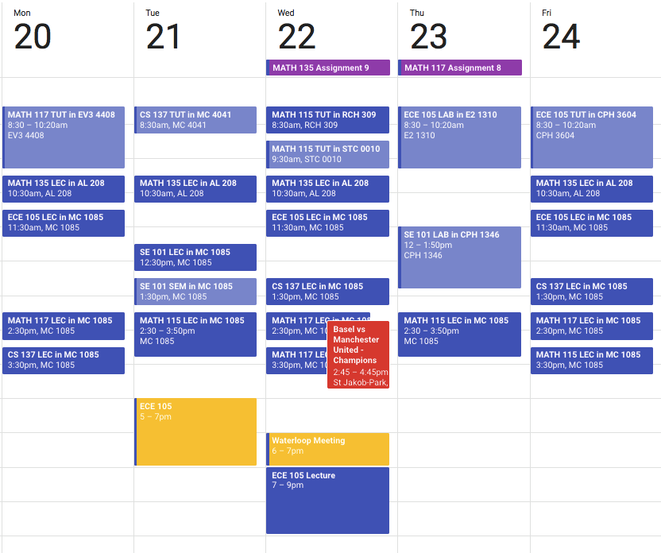

I began getting lots of questions about Waterloo Engineering, so I wrote this post as a summary of my first
year and to answer some common questions. Hope it helps!
Academics
It’s no surprise that university is tougher than high school —
there’s no denying that. I often get asked,
Are my grades going to drop 20% from high school?
First, a bit of background on myself. In my first year of high school, I wasn’t doing as well as I should
have been — and I was fine with it. It actually took me until grade 11 to realize I had more to offer.
Wait… what does this have to do with
university?
My point is, everyone is going to tell you that you’re not going to do as well academically in university
than you did in high school. And that’s true for the most part, it is a big jump. Your expectations
should
lower. But your goals don’t have to.
That’s not to say you should approach university with the same mindset as high school. When I began to
receive my first few assignment marks at the beginning of the year, I was seeing lower numbers, for sure.
But, as the term went on, I began to adjust to the style, and eventually found my feet. Have faith in
yourself! 😄
Don’t get me wrong, if you’re struggling to adjust, it is absolutely nothing to be ashamed
of.
It’s
tough to adjust to a new style of life, and it’s completely normal to not get things right the first time.
However, don’t get hung up on grades; bad or good. If they’re not what you want to see, keep working hard,
seeking help, and they will come. If they are what you want to see, be proud, but move on. Grades aren’t
everything!
How many hours of class do you have per week?
Here’s a sample week of my first term at Waterloo.

Casually ignore the soccer game
22 hours of lectures, 7 hours of tutorials, and 4 hours of labs, so roughly 33 hours per week in class. It
sounds worse than it is - not every tutorial is worth going to (go to the ones which have mandatory quizzes,
but if not and you’re comfortable with the course material, you don’t need to go). Also, SE101 was a pretty
relaxed course.
(2020 Update) Things calm down quite a bit in second and third year.
How is the workload? How was your sleep schedule?
If you manage your time well, you can get however much sleep you want. I don’t think I ever
had to study past 10:30pm in first year, and slept 8 hours pretty much every night.
But, I cannot function without sleep. I often prioritize it over my grades, so take this with a grain
of salt. 😴
Is there a competitive culture?
Honestly, going into university I thought it would be very competitive. I was definitely wrong — most people
help answer your questions and share resources with the class. At least in SE, it feels like everyone’s in
it together. For example, when there’s
a practice exam without professor-approved solutions, we make a crowdsourced Google Doc and everyone adds
their answers (usually pretty reliable given the amount of people in the program).
Motivation
Do grades even matter anymore, as long as you pass?
In a program where most people are planning on not pursuing post-undergraduate
studies, this gets asked a lot. Good grades don’t significantly increase your chance of getting
hired,
although they definitely help.
For me, I could not care less about the number on the page. But that’s not because I don’t care about
school, it’s because I don’t work hard to get good grades, I work hard because I want to work hard.
Personally, I like to hold myself to a certain standard of living, and that has always included trying my
best in school to get the most out of the experience. Tuition isn't cheap,
might as well make the most of it. 😀
Co-op
Probably Waterloo’s biggest attraction is their emphasis on co-op. It’s a great way to gain quality, paid
experience in your field, and graduate pretty much debt free.
How many interviews can you expect in first year?
Not a lot, to be honest. First years have the toughest time finding jobs, since you’re the least experienced
candidates at the university. From 50 applications, most people get expect to get around 3-5 interviews. If
you do have previous
job experience
though, you could see around 10.
What are interviews like?
Most of my interviews were half behavioural, half technical. They typically last around 30 minutes to 1
hour, usually beginning with getting to know you and then transitioning into coding problems. For the
interviews I had that were online, I did actual coding, whereas in-person were mostly whiteboard problems.
But, be prepared for technical questions. Know your algorithms and do lots of practice! If you can show the
interviewer that you know your CS, they won’t care that you’re a first year student.
Is it hard to balance your job search with academics?
Sometimes, yes. It takes effort to perfect your resume, apply to the right jobs, and prepare for and attend
interviews. If you have an interview scheduled at the same time as a lecture, you’re required to attend the
interview. It also did not help that 3 of my biggest interviews were during midterm week. But plan
accordingly, and you’ll be okay.
Extracurriculars
One substantial difference between university and high school is the sheer amount of clubs that you have to
your disposal. Seriously — if you can dream up a club, chances are, your university has one.
In the early weeks I joined a student design team, Waterloop, doing back-end software development. If you
find a design team that you like at your school, try it out! They’re slightly different from clubs — they’re
more technical and project based. It’s a great experience to learn new things, meet people in different
programs and years, and collectively work towards a goal. For us, that goal was creating a pod to compete in
SpaceX’s Hyperloop competition.
Later in the term, I also joined fustal (aka indoor soccer) intramurals with some friends (shoutout to Nuts
and Bolts). Intramurals is an awesome way to relieve stress and get involved with sports. Let’s ignore the
fact that we lost every game, though…
Social Life
Is the social life at Waterloo / in Engineering really that bad?
It’s really not! It’s easy to make friends, especially if you have a cohort (which all Engineering
programs at Waterloo do). Most people are pretty friendly and outgoing, and there are many social events
going on throughout the term, such as the Math and Engineering Semi-Formals.
How are the residence communities?
Personally, I had a great experience. I stayed at NRB (now called CMH), and had an amazing time. Everyone on
my floor was friendly, and it was definitely sad to see it end. If you can live on residence in your first
year, I recommend it! Just be ready to get sick of caf food pretty quickly.
Tips and Final Remarks
-
Go to your lectures, at least until you know you can manage without them. But you’re paying
for them regardless, so why not?
-
Don’t doubt yourself. You’ll be surrounded by even more high achieving students than in high
school. Just remember you’re just as capable (the university admitted you for a reason), and it’s
not a competition regardless.
-
Enjoy what you’re learning. If you don’t enjoy it, what’s the point, really?
-
Take care of yourself. Sleep, exercise, and eat well. It makes a huge difference. Your health
(physical and mental) is most important.
All in all, university is one of the most exciting times in your life. You meet many new people and have a
new sense of independence. Although the academics can be overwhelming at times, don’t forget to have fun!
If you have any questions, feel free to
reach out!